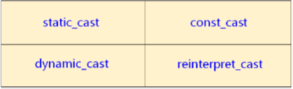

1，C 语言中已经有类型之间的强制转换，C++ 做了改善；
2，C 方式的强制类型转换：
1，(Type) (Expression)；
2，Type (Expression)；
1，这种方式和上述方式相同，但是比较古老，用的较少；
2，代码示例：
1 typedef void(PF)(int);
2
3 struct Point
4 {
5 int x;
6 int y;
7 };
8
9 int v = 0x12345;
10 PF* pf = (PF*)v; // 强制类型转换为函数指针；
11 char c = char(v); // 老式转换，像函数调用，此时发生截断；
12 Point* p = (Point*)v; // 转换为结构体指针；3，太粗暴；
3，粗暴的类型转换编程实验：
1，main.cpp 文件：
1 #include <stdio.h>
2
3 typedef void(PF)(int);
4
5 struct Point
6 {
7 int x;
8 int y;
9 };
10
11 int main()
12 {
13 int v = 0x12345;
14 PF* pf = (PF*)v;
15 char c = char(v);
16 Point* p = (Point*)v;
17
18 pf(5);
19
20 printf("p->x = %d\n", p->x);
21 printf("p->y = %d\n", p->y);
22
23 return 0;
24 }2，输出结果：
段错误
3，大型程序中，这种错误很难察觉；
4，C 方式强制类型转换存在的问题：
1，过于粗暴：
1，任意类型之间都可以进行强制类型转换，编译器很难判断其真确性；
2，难于定位：
1，在源代码中无法快速定位所有使用强制类型转换的语句；
2，C 方式的强制类型转换根本没有什么特征；
5，强制类型转换在实际工程中是很难完全避免的，所以要进行更加安全可靠的转换；
1，C 语言的强制类型转换已经足够简单，没有改进的余地了；
2，提出新的强制类型转换方式；
6，C++ 将强制类型转换分为 4 种不同的类型：

1，用法：xxx_cast< Type >(Exception)；
2，搜索关键字可以查找代码中的强制类型转换；
7，static_cast 强制类型转换：
1，用于基本类型间的转换：
1，任何具有明确定义的类型转换，只要不包含底层 const（也就是指针或引用），都可以使用;
2，不能用于基本类型指针间的转换；
1，也就是基本类型指针的转换类型必须相同，这也就失去了指针转换的意义；
2，特殊情况除外，即把指针存放在 void* 中，并且使用 static_cast 将其强制转换回原来的类型时，应该确保指针的值保持不变，也就是地址相等，因此必须确保转换后得到的类型就是指针所指的类型；
3，用于有继承关系对象之间的转换和类指针之间的转换；
1，这里不能是顶层 const；
8，const_cast 强制类型转换：
1，用于去除变量的只读属性；
2，强制类型转换的目标类型必须是指针或引用；
1，只能改变运算对象的底层 const，其他任何转换都是错误的；
2，常常用于有函数重载的上下文中，其他情况下使用则意味某种设计缺陷，不建议；
9，reinterpret_cast 强制类型转换：
1，用于指针类型间的强制转换；
1，重解释；
2，用于整数和指针类型间的强制转换；
1，reinterpret_cast 通常为运算对象的位模式提供较低层次上的重新释；
2，reinterpret_cast 本质上依赖机器，要想安全地使用 reinterpret_cast 必须对涉及的类型和编译器实现转换的过程非常了解；
3，int* ip;
char* pc = reinterpret_cast<char*>(ip);
这里 pc 所指的真实对象是一个 int 而非字符，如果当做字符，很可能在运行时发生错误；
4，reinterpret_cast 指的是对内存中某个数据重新解释，比如可以把一个 int 数据重新解释成指针，字符型数组解释为其他类型的数组，但这里的重新解释内存大小一定要为解释目的类型的指针指向的内存大小整数倍（应改为一个倍数）；
10，C++ 中旧式强制类型转换和新式强制类型转换的对应关系：
1，旧式：
1，函数形式类型转换：type (Exception)；
2，C 风格类型转换：(type) Exception；
2，新式对应关系：
1，旧式类型转换分别具有与 const_cast、static_cast、reinterpret_cast 相似的行为；
2，某处执行旧式强制类型转换，如果换成 const_cast 和 static_cast 也合法，其行为与对应的命名转换一致；如果替换后不合法，则与 reinterpret_cast 功能类似；
1，char* pc = char* ip; 和 reinterpret_cast 功能类似；
11，dynamic_cast 强制类型转换：
1，用于有继承关系的类指针间的转换；
2，用于有交叉关系的类指针间的转换；
3，具有类型检查的功能；
1，如果转换不成功，得到的是空指针；
4，需要虚函数的支持；
12，新式类型转换初探实例分析：
1，main.cpp 文件：
1 #include <stdio.h>
2
3 void static_cast_demo()
4 {
5 int i = 0x12345;
6 char c = 'c';
7 int* pi = &i;
8 char* pc = &c;
9
10 c = static_cast<char>(i); // 可以；
11 // pc = static_cast<char*>(pi); // 不可以；
12 }
13
14 void const_cast_demo()
15 {
16 const int& j = 1; // 只读变量；
17 int& k = const_cast<int&>(j); // 去除只读变量 j 的只读属性；
18
19 const int x = 2; // 常量，常量虽然进入符号表，但是编译器还是会为真正意义上的常量分配空间；
20 int& y = const_cast<int&>(x); // 这里去掉 x 的只读属性，得到内存中为这个常量分配的内存空间，y 是空间别名；
21
22 // int z = const_cast<int>(x); //不可行，只能用于引用和指针之间；
23
24 k = 5;
25
26 printf("k = %d\n", k);
27 printf("j = %d\n", j);
28
29 y = 8;
30
31 printf("x = %d\n", x);
32 printf("y = %d\n", y);
33 printf("&x = %p\n", &x);
34 printf("&y = %p\n", &y);
35 }
36
37 void reinterpret_cast_demo()
38 {
39 int i = 0;
40 char c = 'c';
41 int* pi = &i;
42 char* pc = &c;
43
44 pc = reinterpret_cast<char*>(pi); // 可行；
45 pi = reinterpret_cast<int*>(pc); // 可行；
46 pi = reinterpret_cast<int*>(i); // 可行；
47 c = reinterpret_cast<char>(i); // 不可行；
48 }
49
50 void dynamic_cast_demo()
51 {
52 int i = 0;
53 int* pi = &i;
54 // char* pc = dynamic_cast<char*>(pi); // 不可行；
55 }
56
57 int main()
58 {
59 static_cast_demo();
60 const_cast_demo();
61 reinterpret_cast_demo();
62 dynamic_cast_demo();
63
64 return 0;
65 }2，输出结果：
1 k = 5
2 j = 5 // j 确实是只读变量；
3 x = 2 // 取符号表中的值，为了兼容 C 语言，还是在栈空间分配了四个字节的内存空间；
4 y = 8 // 为四个字节空间起别名为 y；
5 &x = 0xbfd9a270
6 &y = 0xbfd9a2703，简单的问题复杂化，是一种进化；
13，小结：
1，C 方式的强制类型转换：
1，过于粗暴；
2，潜在问题不易被发现；
3，不易在代码中定位；
2，新式类型转换以 C++ 关键字的方式出现：
1，编译器能够帮助检查潜在的问题；
2，非常方便的在代码中定位；
3，支持动态类型的识别（dynamic_cast)；